仿真
LIBERO99.2；RoboTwin C2C75.14 / C2R68.32。
共享物理语言让不同本体的局部动作有可比较的语义；后训练用历史动作初始化 flow，并扰动未来视觉，降低对完美预测的依赖。这里仍联合生成未来和动作，不是 InternW0-Δ 的未来分支移除方案。
仅凭画面，机器人常能猜下一步，却可能不听“放在杯子右边”。仅用动作loss微调VLM，又可能损失语义能力。UniWAM让VLM继续用熟悉的文字预测目标，同时把手/机械臂局部动作译成统一自然语言，联合训练未来视觉与连续控制。
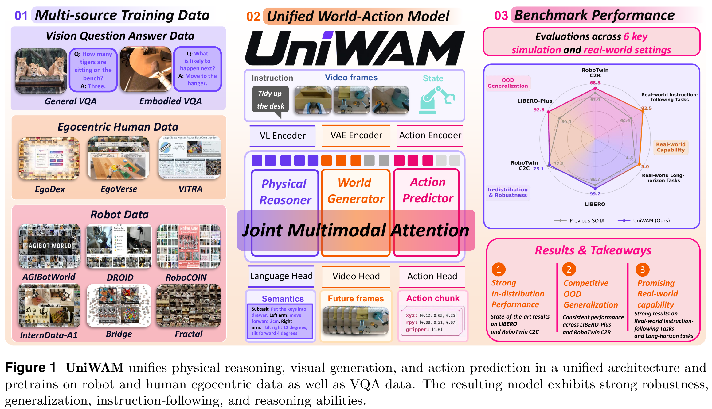
| 背景 / 失败场景 | VLA语义与WAM动态先验各有短板；物体看对不等于动词、空间关系执行对。 |
|---|---|
| 前人依赖 | MoT/Motus结构；Qwen3-VL-2B；Wan2.2-TI2V-5B；LAP物理语言；action-to-action flow。 |
| 关键改动 | 按来源分配监督，保留语言头；future noise augmentation＋history flow。 |
| 效果 | RoboTwin小幅C2C→C2R落差；真机IFR与SR同时提高；少步flow效果强。 |
| 代价 / 缺口 | 人机数据清洗与标注，大模型联合训练；详细mask和部分数据统计不一致，没给在线延迟。 |
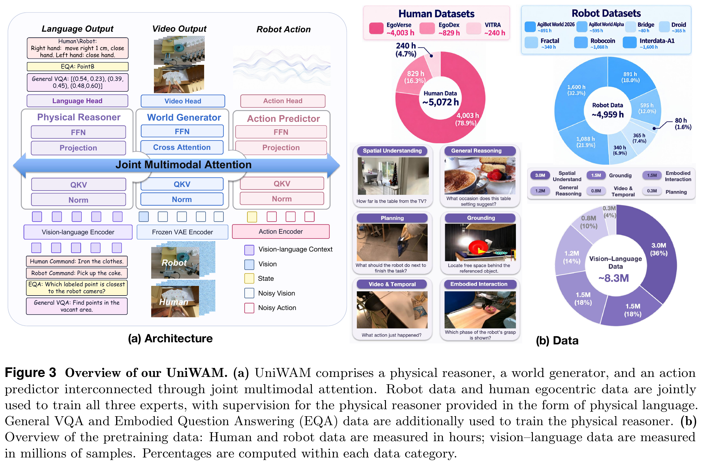
Physical reasoner保留autoregressive language head；world generator在冻结VAE空间预测8个未来帧；action predictor生成16×14动作块。三者30层，世界hidden3072/24heads，reasoner与action接口hidden512/1024（按附录G）。具体Qwen内部维度到接口投影不要凭模型名猜。
训练/部署当前观察保持干净，未来视觉与动作分别有noise level。部署视觉从Gaussian开始，动作从历史加小扰动开始，联合积分2–4步（默认4）。这与OneWM/InternW0-Δ的action-only未来移除不同。论文Eq.3给出M但没有完整逐组mask矩阵；本页不把MoT画成任意全互看，也不擅自宣称一定“先完整生成语言再行动”。
oₜ图像、sₜ本体状态、I任务指令、y语言输出、a未来动作、Z视觉latent、h预测长度、τ去噪进度。上标0/1分别表示目标/源端，不是物理时间帧。视频和动作noise level独立采样；环境时间t与τ分开。
θ是模型参数；y是要生成的物理语言或问答文本，o是图像观察，a是连续动作，s是机器人状态，I是语言指令，h是预测时域；t+1:t+h表示一段未来。m∈{understanding,video,action}，X̃m为该专家输入token，W为其可学习投影矩阵；Q/K/V分别是query/key/value，d是单头key维数，O是attention输出，M是可见性mask。各路独立投影，Q/K/V在token维拼接后计算，再分回专家。M不可见处等价负无穷。例三个key等分但一个被mask，权重变.5/.5/0；“joint”不覆盖mask限制。
只对答案token算loss，不对用户指令算。目标可以是VQA答案，也可以是“左臂上移4厘米、闭夹爪”。这是跨本体行为语义，不是把文本直接当伺服命令。
预训练A¹/Z¹都为噪声；只预测未来视频，不把当前观察算入视觉loss。Eq.6为通用权重写法，实际配方按附录G的1:1:.1报告，不能忽略语言权重。原文没有完整给出每来源loss mask的可执行实现。
50%样本执行，只扰动未来latent；当前观察、原目标和原timestep embedding保持不变。例Zτ=4、ε=0、s=.75，输入变3，但目标仍不变。这是额外输入增强，不是重设flow时间为.75，防止动作过度依赖几乎干净的训练未来。
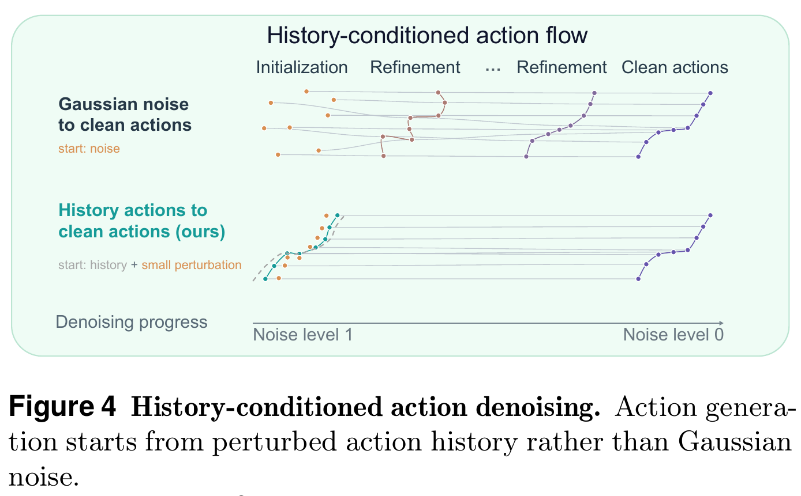
Aₜ₋₁是已经执行的16步历史，与将生成的16步同形状。历史不是未来真值、不是把已承诺prefix固定在当前chunk；不要与RTC混为一谈。
D是文中小时规模记号；Figure7横轴具体标机器人小时，混合额外加人类小时。二者口径需留意，不能自行套出所有总量。教学上每翻倍loss预测下降.00302ln2≈.00209；不断外推最终会预测负loss，说明不能当无限通用定律。R²高也不证明因果或足以替代闭环SR。
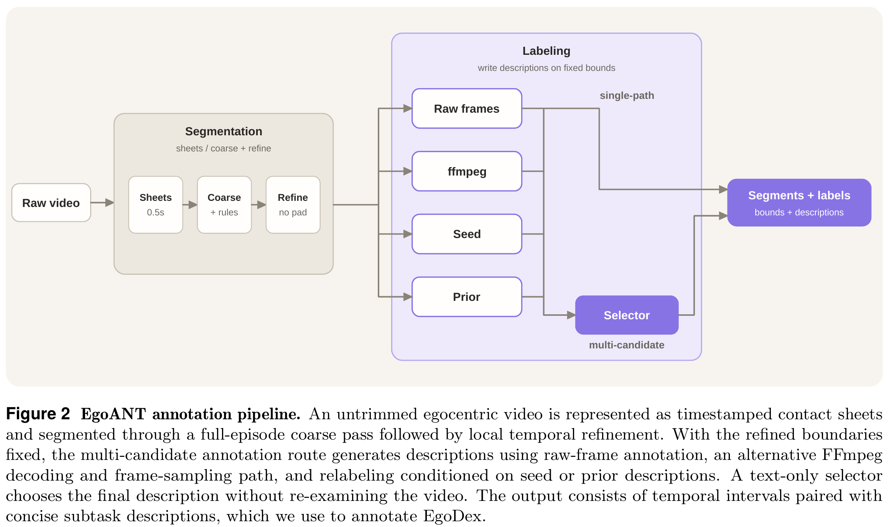
| 数据 | 规模 | 用途 | 要注意 |
|---|---|---|---|
| Robot | Table1 subtotal4958h | 语言、视频、动作监督 | 正文§3.1.1另写4363h；各行舍入加和4959h。 |
| Human | EgoVerse4003＋EgoDex829＋VITRA240＝5072h | 正文称VLM/VGM监督，避免低精度动作loss | Fig3 caption称训练all3；未静默调和。 |
| VQA | 8.293M QA pairs | 空间、grounding、通用推理、时序、交互、规划 | 样本数不是视频小时；不能把饼图百分比当sampler。 |
机器人来源AgiBot2026 891、Alpha595、Bridge80、Droid365、Fractal340、Robocoin1088、InternData1600h。人类手腕在conditioning时刻头相机系下表达，参考系在整个序列固定；每手xyz＋四元数，合14D。没有将人体SMPL转成G1或用SONIC控制的步骤。
质量控制包括median＋Savitzky–Golay残差与加速度/jerk联合异常筛查；state/action互相关校时再看方向一致性；可用元数据时以FK核对joint–EEF；坐标语义不明则保留原方向表示，不强行校正；去黑/坏/模糊帧但保留关键夹爪接触。
Table1总数写10013h，但subtotal4958+5072=10030h。本页不把矛盾精确总数包装成已核验数据量。约1:1是库存和本文受控混合探索，不是证明最优采样权重。32×H800预训练7天；RoboTwin后训练8×H800、200K steps、batch40、12h；LIBERO20h。
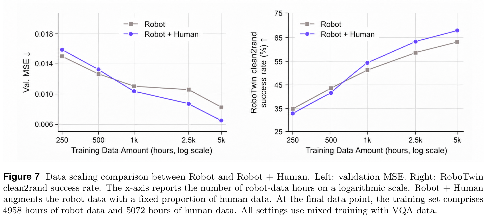
| 基准 | 训练 / 测试 | 结果 | 解释 |
|---|---|---|---|
| LIBERO | 四套任务；本文未重述每套trial/seeds | Spatial99.6 / Object99.6 / Goal99.2 / Long98.4；平均99.2 | 不是所有子项第一，Long低于LingBot98.5。 |
| RoboTwin2 | 50任务×50 clean示范；每任务每设置100episodes | C2C75.14 / C2R68.32 / 平均71.73 | 训练无random；比OpenWAM89.4低的C2C，但C2R更强。 |
| 维度 | SR | 边界 |
|---|---|---|
| Camera | 92.0 | 低于ACoT96.6 |
| Robot初始化 | 89.5 | 不是新本体零样本 |
| Language | 92.2 | 该表最佳 |
| Light | 97.9 | 该表最佳 |
| Background | 97.6 | 该表最佳 |
| Noise | 94.3 | 低于Kairos96.8 |
| Layout | 84.6 | 低于ACoT85.0 |
| Plus平均 | 92.6 | 不能以99.2作为各扰动的严格同任务配对ID分母 |
| RoboTwin C2C→C2R | 75.14→68.32 | 下降6.82pp，保留90.9%；多个扰动共同变化。 |
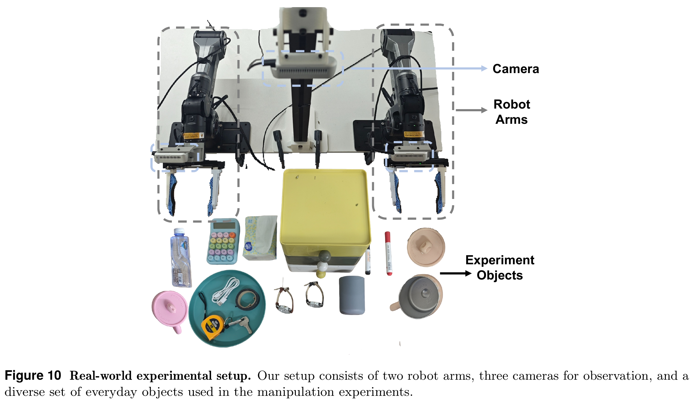
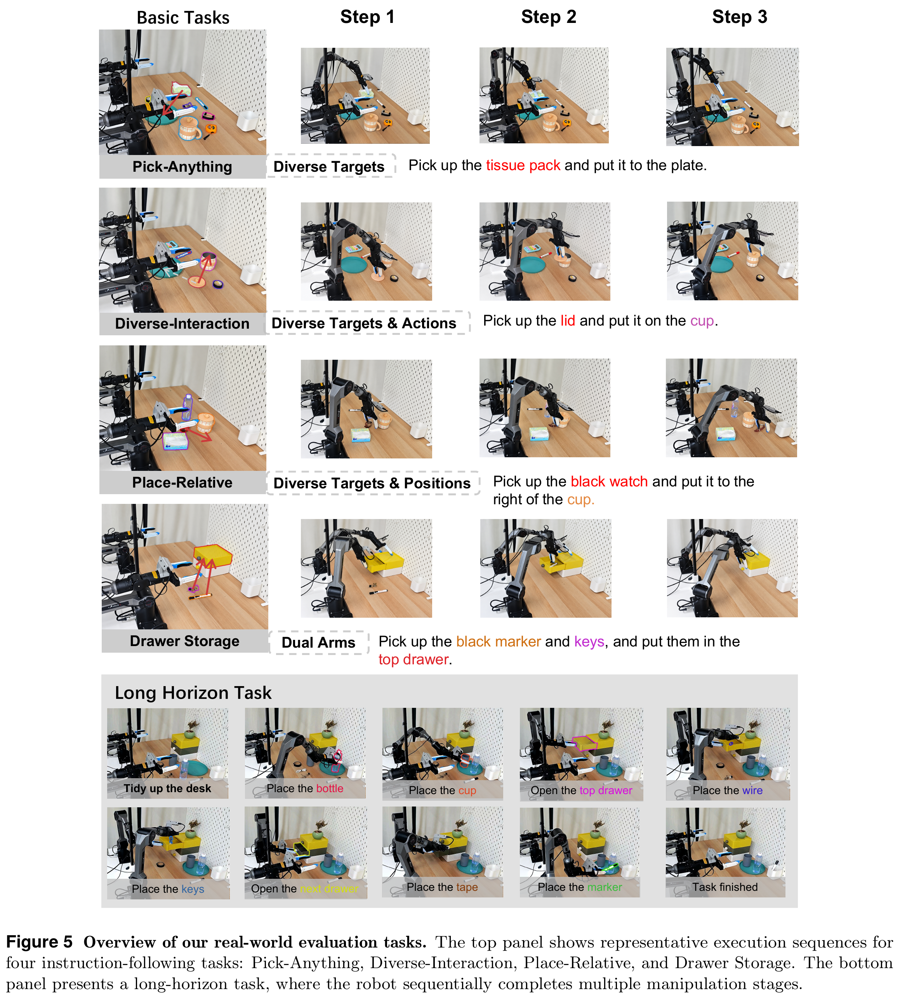
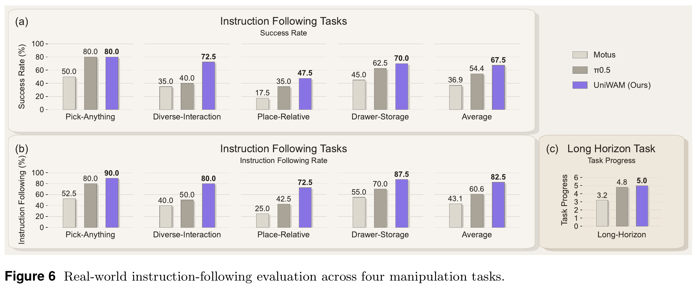
| 任务 | SR / 计数 | Wilson95% | IFR | 判断 |
|---|---|---|---|---|
| Pick-Anything | 80% /32 | 65.2–89.5% | 90% | 目标辨认 |
| Diverse-Interaction | 72.5% /29 | 57.2–83.9% | 80% | 物体＋操作 |
| Place-Relative | 47.5% /19 | 32.9–62.5% | 72.5% | 空间关系最难 |
| Drawer-Storage | 70% /28 | 54.6–81.9% | 87.5% | 双臂与层级 |
| 平均 | 67.5% | 不能替代训练种子方差 | 82.5% | 选对还不一定做成 |
| 长程整理 | 平均5/6阶段 | 非二项成功率，不算Wilson | 高层指令“Tidy up the desk” | π0.5为4.8，Motus3.2；无单独ICL评测。 |
六个评分阶段为放第一杯、第二杯、开抽屉、放目标、关抽屉、放marker。本文未报告每阶段方差、完成时间、人工干预/安全停止数或完整失败类别。成功数区间只描述这组测试，不是训练稳定性证明。
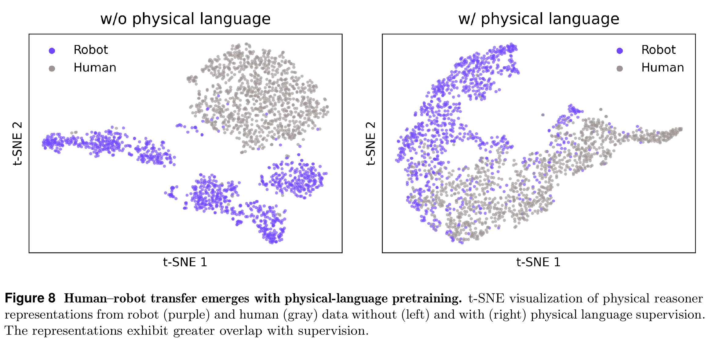
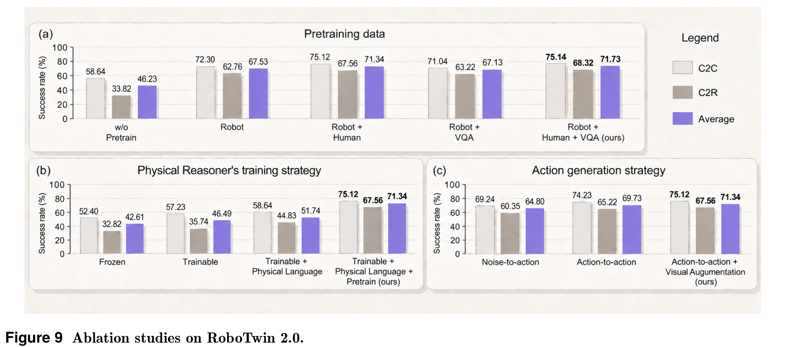
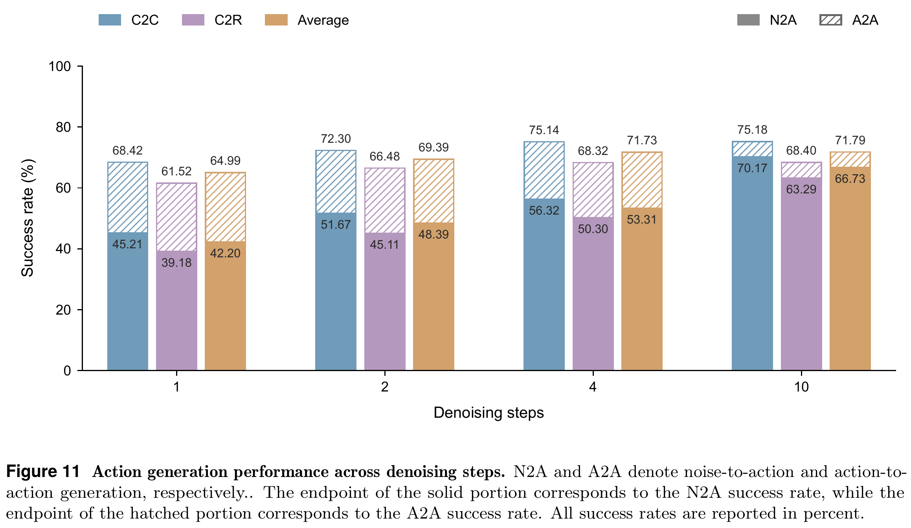
数据消融：无预训练46.23→Robot67.53→Robot+Human71.34→再VQA71.73；Robot+VQA67.13略低于Robot-only，不能说VQA在任意组合都提升。Reasoner解冻42.61→46.49，加物理语言51.74，再预训练71.34。各组设置不同，不能将全部增量相加。
挂杯16/16（C2R/C2C）；交接块18/24；放柜28/40；放罐进篮35/36；二维码旋转41/46。强项如抓roller100/100、click bell99/100。平均68.32没有解决所有精细/交接任务。完整50行在PDF Table7 p.28，非只挑最好例子。
| 位置 | 问题 | 本页处理 |
|---|---|---|
| §1 vs Fig3 | Human是否直接监督action | 显式并列；需代码loss路由才能定。 |
| §3 / Table1 / Fig3 | 4363、4958、4959、总10013与10030 | 逐源保留，拒绝给伪精确合计。 |
| Abstract/Intro vs Eq8/G | “encoded latent history”与同形历史动作加噪 | 数学解释按Eq8，不臆造额外latent encoder。 |
| Eq3 | 只定义mask符号，未给全矩阵 | 不画没有证据的方向连线。 |
| 推理效率 | 2–4步、默认4步，但没有ms/Hz | 只说迭代减少，不声称达到某实时速度。 |
Insight：跨本体迁移不一定要求把每条人类轨迹强行当机器人精确控制目标；共享语义监督也能把它用于表示学习。另一方面，若部署确实依赖预测未来，应训练它容忍未来不准，并用历史提供较好flow起点。这两点与“堆三专家就自然融合”不同，都有具体训练目标。
不是。它是同episode动作连续性的生成先验；没有展示在prompt放新示范后无更新学会新技能的ICL协议。长程milestone提高也不自动证明ICL。